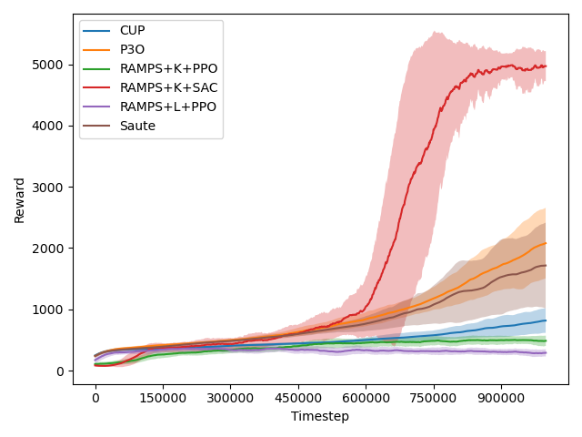

Robust Adaptive Multi-Step Predictive Shielding
Tanmay Ambadkar, Darshan Chudiwal, Greg Anderson, Abhinav Verma
A scalable framework for ensuring safety in deep reinforcement learning, enabling agents to learn high-performing, safe policies in complex, high-dimensional environments.
The Challenge: Safe Exploration in Complex Worlds
Deep Reinforcement Learning (RL) has shown incredible promise, but its application in safety-critical domains like autonomous driving and robotics is limited. A major hurdle is ensuring the agent acts safely not just after training, but throughout the entire learning process.
Existing "shielding" methods that provide formal safety guarantees often struggle to scale. They typically rely on building a patchwork of simple, local models of the environment. This approach becomes computationally intractable in the complex, high-dimensional, and nonlinear systems where deep RL truly shines.
This creates a critical trade-off: either accept weaker safety guarantees or be confined to simpler problems. How can we achieve provable safety in a way that is both scalable and efficient?
Our Solution: RAMPS
RAMPS bridges this gap by unifying robust control theory with modern machine learning. It provides strong, real-time safety guarantees without sacrificing performance or scalability.
Learned Linear Dynamics
RAMPS learns a single, global linear representation of the system's dynamics, using methods like a Deep Koopman Operator.
Robust Multi-Step Shielding
A robust Control Barrier Function (CBF) looks ahead in time, accounting for model errors to prevent future safety violations.
Minimally Invasive Action
The shield finds the closest possible safe action, allowing the agent to learn effectively without being overly restricted.
Theoretical Foundations
RAMPS is built on a solid theoretical footing, combining a linear dynamics model with a novel robust control barrier function to provide formal safety guarantees.
Key Formulas
1. Learned Linear Dynamics
The system dynamics are approximated by a linear model in a (potentially lifted) state space `z`:
Where \(w_k\) is the model error, bounded by \(\epsilon\).
2. Multi-Step Robust Safety Condition
To ensure safety over a future horizon \(j\), this condition must hold for each face \(i\) of the safe set:
3. Robust Tightening Term
This term accounts for the accumulated model error over \(j\) steps, ensuring robustness:
Safety Guarantees
Theorem 1: Model-Relative Forward Invariance
This theorem provides a deterministic guarantee of safety relative to the learned model. It states that if the multi-step safety problem is always solvable and the true model error \(w_k\) stays within its estimated bound \(\epsilon\), the system will never leave the safe set.
Theorem 2: High-Probability Model Accuracy
This theorem connects the model-based guarantee to the real world. It provides a high-probability bound on how often the true model error might exceed our empirical estimate \(\epsilon\). This ensures that the safety guarantees from Theorem 1 hold with high confidence in practice.
Key Results: A New State-of-the-Art in Safety
Across a suite of challenging high-dimensional control environments, RAMPS significantly outperforms existing methods in both safety and performance.
Cumulative Safety Violations

(b) Cheetah

(c) Hopper

(d) Ant

(a) Humanoid
Reward Curves

(b) Cheetah

(c) Hopper

(d) Ant

(a) Humanoid
Up to 90%
Reduction in safety violations compared to state-of-the-art safe RL methods.
100+
Successfully scales to environments with over 100 state dimensions (e.g., SafeAnt).
<0.5 ms
Average per-step shield computation time, making it feasible for real-time control.